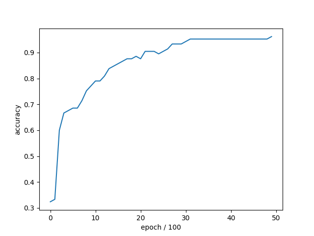
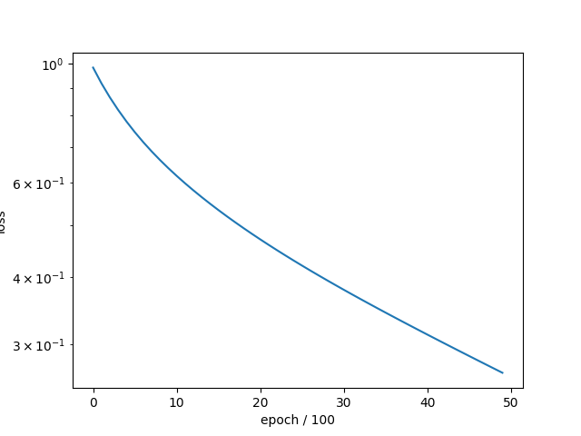

Note
Go to the end to download the full example code.
Logistic Regression on the Iris Dataset
This script trains a logistic regression model on the Iris dataset using gradient descent. It supports both binary and multi-class classification.
- 
- 
Epoch: 1 - Metrics: {'loss': '0.9839', 'accuracy': '0.3238'}
Epoch: 101 - Metrics: {'loss': '0.9196', 'accuracy': '0.3333'}
Epoch: 201 - Metrics: {'loss': '0.8661', 'accuracy': '0.6000'}
Epoch: 301 - Metrics: {'loss': '0.8203', 'accuracy': '0.6667'}
Epoch: 401 - Metrics: {'loss': '0.7805', 'accuracy': '0.6762'}
Epoch: 501 - Metrics: {'loss': '0.7456', 'accuracy': '0.6857'}
Epoch: 601 - Metrics: {'loss': '0.7146', 'accuracy': '0.6857'}
Epoch: 701 - Metrics: {'loss': '0.6869', 'accuracy': '0.7143'}
Epoch: 801 - Metrics: {'loss': '0.6619', 'accuracy': '0.7524'}
Epoch: 901 - Metrics: {'loss': '0.6391', 'accuracy': '0.7714'}
Epoch: 1001 - Metrics: {'loss': '0.6182', 'accuracy': '0.7905'}
Epoch: 1101 - Metrics: {'loss': '0.5990', 'accuracy': '0.7905'}
Epoch: 1201 - Metrics: {'loss': '0.5810', 'accuracy': '0.8095'}
Epoch: 1301 - Metrics: {'loss': '0.5643', 'accuracy': '0.8381'}
Epoch: 1401 - Metrics: {'loss': '0.5486', 'accuracy': '0.8476'}
Epoch: 1501 - Metrics: {'loss': '0.5338', 'accuracy': '0.8571'}
Epoch: 1601 - Metrics: {'loss': '0.5199', 'accuracy': '0.8667'}
Epoch: 1701 - Metrics: {'loss': '0.5066', 'accuracy': '0.8762'}
Epoch: 1801 - Metrics: {'loss': '0.4941', 'accuracy': '0.8762'}
Epoch: 1901 - Metrics: {'loss': '0.4822', 'accuracy': '0.8857'}
Epoch: 2001 - Metrics: {'loss': '0.4708', 'accuracy': '0.8762'}
Epoch: 2101 - Metrics: {'loss': '0.4599', 'accuracy': '0.9048'}
Epoch: 2201 - Metrics: {'loss': '0.4495', 'accuracy': '0.9048'}
Epoch: 2301 - Metrics: {'loss': '0.4395', 'accuracy': '0.9048'}
Epoch: 2401 - Metrics: {'loss': '0.4299', 'accuracy': '0.8952'}
Epoch: 2501 - Metrics: {'loss': '0.4207', 'accuracy': '0.9048'}
Epoch: 2601 - Metrics: {'loss': '0.4118', 'accuracy': '0.9143'}
Epoch: 2701 - Metrics: {'loss': '0.4032', 'accuracy': '0.9333'}
Epoch: 2801 - Metrics: {'loss': '0.3950', 'accuracy': '0.9333'}
Epoch: 2901 - Metrics: {'loss': '0.3870', 'accuracy': '0.9333'}
Epoch: 3001 - Metrics: {'loss': '0.3792', 'accuracy': '0.9429'}
Epoch: 3101 - Metrics: {'loss': '0.3717', 'accuracy': '0.9524'}
Epoch: 3201 - Metrics: {'loss': '0.3644', 'accuracy': '0.9524'}
Epoch: 3301 - Metrics: {'loss': '0.3574', 'accuracy': '0.9524'}
Epoch: 3401 - Metrics: {'loss': '0.3505', 'accuracy': '0.9524'}
Epoch: 3501 - Metrics: {'loss': '0.3438', 'accuracy': '0.9524'}
Epoch: 3601 - Metrics: {'loss': '0.3373', 'accuracy': '0.9524'}
Epoch: 3701 - Metrics: {'loss': '0.3310', 'accuracy': '0.9524'}
Epoch: 3801 - Metrics: {'loss': '0.3248', 'accuracy': '0.9524'}
Epoch: 3901 - Metrics: {'loss': '0.3188', 'accuracy': '0.9524'}
Epoch: 4001 - Metrics: {'loss': '0.3129', 'accuracy': '0.9524'}
Epoch: 4101 - Metrics: {'loss': '0.3071', 'accuracy': '0.9524'}
Epoch: 4201 - Metrics: {'loss': '0.3015', 'accuracy': '0.9524'}
Epoch: 4301 - Metrics: {'loss': '0.2960', 'accuracy': '0.9524'}
Epoch: 4401 - Metrics: {'loss': '0.2907', 'accuracy': '0.9524'}
Epoch: 4501 - Metrics: {'loss': '0.2854', 'accuracy': '0.9524'}
Epoch: 4601 - Metrics: {'loss': '0.2803', 'accuracy': '0.9524'}
Epoch: 4701 - Metrics: {'loss': '0.2753', 'accuracy': '0.9524'}
Epoch: 4801 - Metrics: {'loss': '0.2703', 'accuracy': '0.9524'}
Epoch: 4901 - Metrics: {'loss': '0.2655', 'accuracy': '0.9619'}
tensor([2, 0, 0, 1, 2, 2, 0, 0, 1, 0, 2, 0, 0, 0, 2, 0, 0, 1, 2, 1, 0, 1, 2, 0,
1, 2, 0, 0, 1, 1, 2, 2, 2, 2, 2, 0, 2, 2, 0, 2, 2, 1, 0, 2, 1]) tensor([[1.2182e-03, 2.7876e-01, 7.2003e-01],
[9.8605e-01, 1.3915e-02, 3.9178e-05],
[9.2212e-01, 7.7562e-02, 3.1565e-04],
[4.1459e-02, 6.4117e-01, 3.1737e-01],
[5.6665e-04, 6.2161e-02, 9.3727e-01],
[2.1782e-02, 4.2050e-01, 5.5771e-01],
[9.6189e-01, 3.7979e-02, 1.2723e-04],
[9.3896e-01, 6.0317e-02, 7.2053e-04],
[1.4542e-01, 7.8055e-01, 7.4025e-02],
[9.5317e-01, 4.6541e-02, 2.9011e-04],
[2.4501e-03, 2.3806e-01, 7.5949e-01],
[9.6297e-01, 3.6917e-02, 1.1226e-04],
[9.6276e-01, 3.7116e-02, 1.2880e-04],
[9.6556e-01, 3.4322e-02, 1.1490e-04],
[7.1571e-04, 1.1356e-01, 8.8572e-01],
[8.8843e-01, 1.1123e-01, 3.3939e-04],
[9.5905e-01, 4.0847e-02, 1.0573e-04],
[1.0368e-01, 8.1501e-01, 8.1311e-02],
[4.2484e-05, 7.8789e-02, 9.2117e-01],
[3.3116e-02, 7.4662e-01, 2.2026e-01],
[9.8201e-01, 1.7894e-02, 9.1091e-05],
[1.3561e-02, 7.8091e-01, 2.0553e-01],
[4.9532e-04, 1.2875e-01, 8.7075e-01],
[9.4891e-01, 5.0910e-02, 1.7646e-04],
[4.9291e-03, 5.0199e-01, 4.9309e-01],
[2.7232e-04, 5.9723e-02, 9.4000e-01],
[9.6513e-01, 3.4709e-02, 1.5893e-04],
[9.2440e-01, 7.5324e-02, 2.7561e-04],
[3.6358e-03, 6.4813e-01, 3.4823e-01],
[6.8061e-02, 7.7697e-01, 1.5497e-01],
[4.6297e-04, 6.4175e-02, 9.3536e-01],
[4.4731e-04, 1.0371e-01, 8.9584e-01],
[8.5085e-03, 3.9471e-01, 5.9679e-01],
[6.3985e-04, 1.6542e-01, 8.3394e-01],
[1.3386e-03, 1.8157e-01, 8.1709e-01],
[8.9033e-01, 1.0934e-01, 3.3144e-04],
[3.8786e-03, 3.0122e-01, 6.9491e-01],
[1.1262e-02, 4.0395e-01, 5.8479e-01],
[9.6067e-01, 3.9092e-02, 2.3722e-04],
[2.4400e-04, 1.5064e-01, 8.4911e-01],
[2.1060e-03, 3.4304e-01, 6.5485e-01],
[5.1012e-02, 7.4277e-01, 2.0622e-01],
[9.2515e-01, 7.4575e-02, 2.7907e-04],
[2.0567e-03, 2.4088e-01, 7.5706e-01],
[1.3069e-02, 6.8960e-01, 2.9733e-01]])
tensor([2, 0, 0, 1, 2, 2, 0, 0, 1, 0, 2, 0, 0, 0, 2, 0, 0, 1, 2, 1, 0, 1, 2, 0,
1, 2, 0, 0, 1, 1, 2, 2, 2, 2, 2, 0, 2, 2, 0, 2, 2, 1, 0, 2, 1]) tensor([2, 0, 0, 1, 2, 1, 0, 0, 1, 0, 2, 0, 0, 0, 2, 0, 0, 1, 2, 1, 0, 1, 2, 0,
1, 2, 0, 0, 1, 1, 2, 2, 2, 2, 2, 0, 2, 2, 0, 2, 2, 1, 0, 2, 1])
0.9777777791023254
import torch
from sklearn import datasets
import matplotlib.pyplot as plt
from DLL.MachineLearning.SupervisedLearning.LinearModels import LogisticRegression
from DLL.Data.Preprocessing import MinMaxScaler, CategoricalEncoder, data_split
from DLL.Data.Metrics import accuracy
iris = datasets.load_iris()
binary = False
if binary:
x = torch.tensor(iris.data[iris.target != 2], dtype=torch.float32)
y = torch.tensor(iris.target[iris.target != 2], dtype=torch.float32)
else:
x = torch.tensor(iris.data, dtype=torch.float32)
y = torch.tensor(iris.target, dtype=torch.float32)
scaler = MinMaxScaler()
encoder = CategoricalEncoder()
x = scaler.fit_transform(x)
y = encoder.fit_encode(y)
x_train, y_train, _, _, x_test, y_test = data_split(x, y, train_split=0.7, validation_split=0.0)
model = LogisticRegression(learning_rate=0.001)
history = model.fit(x_train, y_train, epochs=5000, metrics=["loss", "accuracy"], callback_frequency=100, verbose=True)
y_pred = model.predict(x_test)
print(y_pred, model.predict_proba(x_test))
print(y_pred, y_test)
print(accuracy(y_pred, y_test))
plt.plot(history["accuracy"])
plt.xlabel("epoch / 100")
plt.ylabel("accuracy")
plt.figure()
plt.semilogy(history["loss"])
plt.xlabel("epoch / 100")
plt.ylabel("loss")
plt.show()
Total running time of the script: (0 minutes 5.898 seconds)